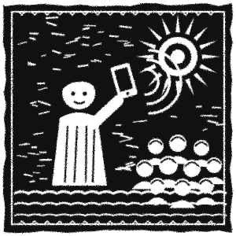

Há um pinhão escondido em cada canal, desenhado no estilo daquele canal. Ache os 11.There is a pinhão (the araucaria seed) hidden in every channel, drawn in that channel's style. Find all 11.
CH 01Sala · pixel 16-bitLiving room · 16-bit pixel art
Otávio Kich Mata
Estudo Relações Internacionais na UFSC e pesquiso migração e direito internacional. Também construo jogos, painéis de dados e fluxos de trabalho com IA.I study International Relations at the Federal University of Santa Catarina (UFSC) and research migration and international law. I also build games, data dashboards and AI workflows.
Moro em Florianópolis. Atendi migrantes e refugiados na Defensoria Pública da União, fui voluntário online da ONU e já fiz vídeos de educação política (a história está no canal 10, em cordel).I live in Florianópolis, Brazil. I've assisted migrants and refugees at Brazil's Federal Public Defender's Office, volunteered online for the UN, and made political education videos (the story is on channel 10, as a cordel).
Um MMORPG em 2D que roda no navegador. Cinco classes, masmorras com chefes, guildas, mercado entre jogadores e uma estátua onde tempo real de estudo vira progresso no jogo. Fiz tudo coordenando agentes de código, sem vir da computação.A 2D MMORPG that runs in the browser. Five classes, boss dungeons, guilds, a player market, and a statue that turns real study time into in-game progress. I built it by directing coding agents, without a computer science background.
Roda no navegador, no computador e no celular.Runs in the browser, on desktop and phone.
O servidor em Node.js decide cada ação, 30 vezes por segundo.A Node.js server decides every action, 30 times a second.
Feito para aguentar 1.000 jogadores.Built to handle 1,000 players.
Prévia em 2D no navegador e versão 3D jogável no Godot.A 2D preview in the browser and a playable 3D version in Godot.
Mais de 2.600 commits desde julho de 2026, meus e de agentes de IA.More than 2,600 commits since July 2026, mine and AI agents'.
CH 03Art déco
CH 03 · Art déco
Quem escreve o Kapi Online, hora a horaWho writes Kapi Online, hour by hour
De 28 de julho a 25 de novembro de 2026 o repositório recebeu 2.630 commits: 922 meus, 865 de agentes de IA e 843 automáticos do GitHub Actions, que ficam fora do relógio.From July 28 to November 25, 2026 the repository got 2,630 commits: 922 mine, 865 from AI agents and 843 automatic ones from GitHub Actions, which are left off the clock.
Meu pico é à meia-noite, e 35% dos meus commits saem entre 22h e 6h. O dos agentes é às 5h.My peak is at midnight, and 35% of my commits land between 10 p.m. and 6 a.m. The agents peak at 5 a.m.
Meus commitsMy commits
Agentes de IA (Jules e outros)AI agents (Jules and others)
Ver os números por horaSee the numbers by hour
HoraHour
MeusMine
AgentesAgents
CH 04Caderno à canetaPen and paper
Florianópolis,Florianópolis,
PesquisaResearch
Direito internacional público, políticas migratórias, direitos humanos e constitucionalismo latino-americano.Public international law, migration policy, human rights and Latin American constitutionalism.
Pesquisa em andamento · microdados do SISMIGRA, 2016 a 2026Ongoing research · SISMIGRA microdata, 2016 to 2026
Imigração da Ásia e da África para o BrasilImmigration from Asia and Africa to Brazil
Análise dos registros de quem chega do Sul Global: perfil, amparo legal e inserção no trabalho. Para isso montei um painel de sete páginas no Power BI (canal 06).An analysis of the records of people arriving from the Global South: profile, legal basis and labor market entry. I built a seven-page Power BI dashboard for it (channel 06).
Em andamentoIn progress
Artigos e livrosArticles and books
Educação financeira e tomada de decisãoFinancial education and decision-making
Dois artigos publicados (Qualis B3+) e um submetido. Coautoria em livros, entre eles “Diálogos Impertinentes na Pandemia” (2022).Two published articles (Qualis B3+) and one under review. Co-author of books, including “Diálogos Impertinentes na Pandemia” (2022).
PublicadoPublished
Iniciação científica · PIBIC e EIRENÈUndergraduate research · PIBIC and EIRENÈ
Constitucionalismo latino-americanoLatin American constitutionalism
Três iniciações científicas sobre constitucionalismo latino-americano e direito internacional, com trabalhos apresentados no ADM 2024, no BELS 2024 e no V SEPERI.Three undergraduate research grants on Latin American constitutionalism and international law, with papers presented at ADM 2024, BELS 2024 and V SEPERI.
ApresentadoPresented
Sapiens Parque, Florianópolis
Pré-incubaçãoPre-incubation
Tive uma proposta de projeto aprovada para pré-incubação no Sapiens Parque.A project proposal of mine was accepted for pre-incubation at Sapiens Parque.
AprovadoApproved
9,07de 10 no IAA (GPA 3.6 de 4.0)out of 10, cumulative index (GPA 3.6 of 4.0)
+ dois Certificados de Desempenho Acadêmico: 9,70 e 9,30+ two UFSC Academic Performance Certificates: 9.70 and 9.30
Defensoria Pública da União, Núcleo de MigraçãoFederal Public Defender's Office, Migration Unit
Atendi migrantes, refugiados e solicitantes de refúgio em inglês, espanhol e francês. Redigi peças, requerimentos administrativos e relatórios de regularização migratória, e acompanhei processos com órgãos federais, consulados e serviços de acolhimento.I assisted migrants, refugees and asylum seekers in English, Spanish and French. I drafted petitions, administrative requests and reports for migratory regularization, and followed cases with federal agencies, consulates and reception services.
jun – dez 2024 · remotoJun – Dec 2024 · remote
Voluntários das Nações Unidas (UNV), UNRISDUnited Nations Volunteers (UNV), UNRISD
Pesquisa e engajamento comunitário ligados aos Objetivos de Desenvolvimento Sustentável, com análise de políticas regionais para o Instituto de Pesquisa das Nações Unidas para o Desenvolvimento Social.Research and community engagement tied to the Sustainable Development Goals, with regional policy analysis for the UN Research Institute for Social Development.
UFSC · VII eand VIII
Simulações da ONUModel UN
Organizei duas edições do UFSCMUN e escrevi guias de estudo e regras da simulação.I organized two editions of UFSCMUN and co-wrote the study guides and rules.
CertificadosCertificates
BSAFE, AUGM e ENAPBSAFE, AUGM and ENAP
Segurança em campo BSAFE (UNDSS, ONU), Escola de Inverno AUGM sobre democracia latino-americana (UFABC) e Direitos dos Imigrantes (ENAP/EGOV).BSAFE field security (UNDSS, United Nations), the AUGM Winter School on Latin American Democracy (UFABC) and Immigrant Rights (ENAP/EGOV).
Partidas · idiomasDepartures · languages
DestinoDestinationNívelLevelStatus
CH 06RisografiaRisograph
CH 06 · Risografia em duas coresTwo-colour risograph
PainelSouth-SouthSul-Suldashboard
Registros de imigrantes do Sul Global no Brasil, de 2010 a abril de 2026, com foco em Ásia e África. Um seletor troca o critério de Sul Global (ONU/DESA ou UNCTAD) em todas as medidas.Records of immigrants from the Global South in Brazil, from 2010 to April 2026, with a focus on Asia and Africa. One selector switches the Global South definition (UN DESA or UNCTAD) across every measure.
O arquivo do Power BI sai de um script em Python, com tabelas, relações, medidas DAX e páginas. Quando chega dado novo, refaço o painel inteiro com um comando.The Power BI file is generated by a Python script, with tables, relationships, DAX measures and pages. When new data arrives, one command rebuilds the whole dashboard.
Critério:Definition:
Visão geralOverview
OrigensOrigins
PerfilProfile
Amparo legalLegal basis
Destinos no BrasilDestinations in Brazil
Ásia e ÁfricaAsia and Africa
Notas metodológicasMethodology notes
CH 07Planta técnicaBlueprint
CH 07 · Planta técnicaBlueprint
Como trabalho com IAHow I work with AI
Uso Claude Code e Gemini CLI. O ciclo de cada tarefa:I use Claude Code and Gemini CLI. Every task goes through this loop:
01Escrevo as regras do projetoI write the project's rulesAGENTS.md
02Divido o trabalho em tarefas pequenasI split the work into small tasks
03Os agentes escrevem o códigoThe agents write the codeClaude Code · Gemini CLI
04Reviso o que voltaI review what comes back
05Testo antes de publicarI test before shipping
A
Código com agentesCoding with agents
Várias sessões trabalham ao mesmo tempo no mesmo repositório, cada uma na sua tarefa. O Kapi Online tem 865 commits de agentes.Several sessions work at once in the same repository, each on its own task. Kapi Online has 865 commits from agents.
B
Na pesquisaIn research
Tratamento de microdados, painéis montados por código e baralhos do Anki gerados a partir das leituras.Cleaning microdata, building dashboards from code, and turning readings into Anki decks.
C
Dentro do jogoInside the game
No Kapi Online, uma IA avalia o que o jogador estudou e devolve uma dica e um próximo passo, como um professor.In Kapi Online, an AI reviews what the player studied and replies with a tip and a next step, like a teacher.
Detalhe 1: trechos reais do AGENTS.md do Kapi Online, as regras que os agentes leem antes de mexer no códigoDetail 1: real lines from Kapi Online's AGENTS.md, the rules agents read before touching the code
$ head AGENTS.md
- NEVER use emojis in any UI, text, logs, or code.
- NEVER use floating text, floating labels, or damage-text
strings to demonstrate or substitute for in-game visual
effects.
- Several agents often work in this folder at the same time,
so commit only your own changes.
ProjetoProject
Fluxo de trabalho com agentesAgent workflow
FolhaSheet
07 / 11
DesenhoDrawn by
O. K. M.
EscalaScale
1 : 1
CH 08MangáManga
CH 08 · MangáManga
FliperamaArcade
Os outros dois jogos agora têm versões offline, grátis no itch.io. Rodam inteiros no navegador e salvam o progresso no seu aparelho.My other two games now have offline versions, free on itch.io. They run entirely in the browser and save progress on your device.
Pinball Heroes
Pinball com RPG: você lança cada herói na mesa, e bumpers, portais e impulsos mudam a velocidade e o dano. Campanha com 30 fases.Pinball meets RPG: you launch each hero into the board, and bumpers, portals and boosts change speed and damage. A 30-stage campaign.
RPG tático por turnos num tabuleiro 3D. Invoque heróis, posicione o time e acerte o tempo dos golpes e das defesas.Turn-based tactics on a 3D board. Summon heroes, position the squad and time your strikes and parries.
Continua no próximo canalTo be continued on the next channel
CH 09Menu de RPGRPG menu
Otávio Kich Mata
Florianópolis, SC, Brasil | | kich.dev.br | lattes.cnpq.br/4797477996223695
CH 09 · Menu de RPG 16-bit e tipografia suíça16-bit RPG menu and Swiss typography
Ficha e currículoCharacter sheet and CV
O mesmo currículo de dois jeitos. O documento é o que sai na impressão.The same CV two ways. The document is the one that prints.
Otávio Kich Mata
Internacionalista e desenvolvedor de jogos (multiclasse)International relations scholar and game developer (multiclass)
Florianópolis, SC
IAA
9,07
IdiomasLanguages
6
Commits meusMy commits
922
ArtigosArticles
2
ONUs simuladasModel UNs run
2
OBMEP
2
Núcleo de Migração da DPU, 2024 a 2025DPU Migration Unit, 2024 to 2025ConcluídaDone
Voluntário online da ONU no UNRISD, 2024UN online volunteer with UNRISD, 2024ConcluídaDone
Monitoria e pesquisa no IFSC, 2020 a 2022Tutoring and research at IFSC, 2020 to 2022ConcluídaDone
Bacharelado em RI na UFSC, até dezembro de 2027BA in International Relations at UFSC, until December 2027Em cursoActive
Pesquisa Sul-Sul com dados do SISMIGRA, 2026South-South research with SISMIGRA data, 2026Em cursoActive
Kapi Online, desde julho de 2026Kapi Online, since July 2026Em cursoActive
Seis idiomasSix languagesPortuguês, inglês C2, espanhol, francês B2, e o básico de alemão e mandarim.Portuguese, English C2, Spanish, French B2, and basic German and Mandarin.
CorujaNight owl35% dos meus commits saem entre 22h e 6h.35% of my commits land between 10 p.m. and 6 a.m.
17 dias seguidos17-day streakCommits todos os dias, de 2 a 18 de novembro de 2026.Commits every day, November 2 to 18, 2026.
PublicadoPublishedDois artigos em revistas (Qualis B3+).Two journal articles (Qualis B3+).
IAA 9,07E dois Certificados de Desempenho Acadêmico.And two Academic Performance Certificates.
OBMEP duas vezesOBMEP twiceMenções honrosas em 2017 e 2019.Honorable mentions in 2017 and 2019.
5.000 seguidores5,000 followersEducação política no TikTok (canal 10).Political education on TikTok (channel 10).
BSAFESegurança em campo, UNDSS/ONU.Field security, UNDSS/UN.
Mata completaFull forestAche os 11 pinhões escondidos nos canais.Find the 11 pinhões hidden across the channels.
Power BIPainéis e DAXDashboards and DAX
PythonTratamento de dadosData cleaning
Claude CodeAgentes de códigoCoding agents
Gemini CLIAgentes de códigoCoding agents
LaTeXTextos acadêmicosAcademic writing
DaVinci ResolveEdição de vídeoVideo editing
ExcelPlanilhasSpreadsheets
Google WorkspaceDocumentos em equipeShared documents
Tempo de jogoPlay time00:00:00
PinhõesPinhões0/11
jul 2026 – hojeJul 2026 – now
Kapi Online
Projeto pessoal, mmorpg.kich.dev.brPersonal project, mmorpg.kich.dev.br
MMORPG em 2D no navegador, com versão para celular e servidor em Node.js e Socket.io.2D browser MMORPG with a mobile layout and a Node.js and Socket.io server.
Desenvolvido coordenando agentes de código: regras da arquitetura por escrito, tarefas divididas, revisão e teste de cada versão.Built by directing coding agents: written architecture rules, split tasks, review and testing of every release.
Mais de 2.600 commits até novembro de 2026: 922 meus e 865 de agentes de IA.More than 2,600 commits as of November 2026: 922 mine and 865 from AI agents.
2026
Imigração Sul-Sul no BrasilSouth-South immigration to Brazil
Pesquisa em andamentoOngoing research
Análise comparada da imigração da Ásia e da África com microdados do SISMIGRA (2016 a 2026).Comparative analysis of immigration from Asia and Africa using SISMIGRA microdata (2016 to 2026).
Painel de sete páginas no Power BI gerado por script em Python.Seven-page Power BI dashboard generated by a Python script.
dez 2024 – set 2025Dec 2024 – Sep 2025
Defensoria Pública da União (DPU)Federal Public Defender's Office of Brazil (DPU)
Estagiário, assistente jurídico-administrativo no Núcleo de Migração, FlorianópolisLegal and administrative intern, Migration Unit, Florianópolis
Atendimento a migrantes, refugiados e solicitantes de refúgio em inglês, espanhol e francês.Assisted migrants, refugees and asylum seekers in English, Spanish and French.
Redação de peças jurídicas, requerimentos administrativos e relatórios para regularização migratória.Drafted legal petitions, administrative requests and reports for migratory regularization.
Acompanhamento de processos com órgãos federais, consulados e serviços de acolhimento.Followed cases with federal agencies, consulates and reception services.
jun – dez 2024Jun – Dec 2024
Voluntários das Nações Unidas (UNV), UNRISDUnited Nations Volunteers (UNV), UNRISD
Voluntário online em pesquisa e engajamento comunitário, remotoOnline volunteer in research and community engagement, remote
Iniciativas de cooperação internacional ligadas aos Objetivos de Desenvolvimento Sustentável.International cooperation work tied to the Sustainable Development Goals.
Análise de políticas regionais com o Instituto de Pesquisa das Nações Unidas para o Desenvolvimento Social.Regional policy analysis with the UN Research Institute for Social Development.
ago 2023 – dez 2027Aug 2023 – Dec 2027
Bacharelado em Relações InternacionaisBA in International Relations
Universidade Federal de Santa Catarina (UFSC), formatura previstaFederal University of Santa Catarina (UFSC), expected graduation
IAA 9,07 de 10 (GPA 3.6 de 4.0). Certificado de Desempenho Acadêmico em 2023/2 (9,70) e 2024/1 (9,30).Cumulative index 9.07 of 10 (GPA 3.6 of 4.0). UFSC Academic Performance Certificate in 2023/2 (9.70) and 2024/1 (9.30).
Disciplinas de destaque: Direito Internacional, Análise de Política Externa, Segurança Internacional e Política Comparada.Relevant courses: International Law, Foreign Policy Analysis, International Security and Comparative Politics.
ago 2023 – hojeAug 2023 – now
Pesquisa e extensão na UFSCResearch and outreach at UFSC
Pesquisador e extensionista, FlorianópolisUndergraduate researcher, Florianópolis
Coautoria de 2 artigos publicados sobre educação financeira e tomada de decisão (Qualis B3+); 1 artigo submetido.Co-authored 2 published articles on financial education and decision-making (Qualis B3+); 1 under review.
Iniciações científicas (PIBIC e EIRENÈ) em constitucionalismo latino-americano e direito internacional.Undergraduate research grants (PIBIC and EIRENÈ) on Latin American constitutionalism and international law.
Trabalhos apresentados no ADM 2024, BELS 2024 e V SEPERI; coautoria de livro publicado.Papers presented at ADM 2024, BELS 2024 and V SEPERI; co-author of a published book.
Organização do VII e VIII UFSCMUN e coautoria dos guias de estudo e regras.Organized the 7th and 8th UFSC Model UN and co-wrote the study guides and rules.
Proposta aprovada para pré-incubação no Sapiens Parque.Proposal accepted for pre-incubation at Sapiens Parque.
mar 2020 – dez 2022Mar 2020 – Dec 2022
Instituto Federal de Santa Catarina (IFSC)Federal Institute of Santa Catarina (IFSC)
Monitor e pesquisador, São Miguel do OesteTutor and research fellow, São Miguel do Oeste
Monitoria em Física, Matemática e no curso de Português para Estrangeiros.Tutored Physics, Mathematics and Portuguese for Foreigners.
Oficinas de lógica de programação, robótica e Arduino em escolas públicas da região.Ran workshops on programming logic, robotics and Arduino in regional public schools.
Coautoria do livro “Diálogos Impertinentes na Pandemia” (2022); 2º lugar na IV SIC (2022).Co-authored the book “Diálogos Impertinentes na Pandemia” (2022); 2nd place at the IV Science Initiation Week (2022).
IdiomasLanguages
PortuguêsPortuguese
nativonative
InglêsEnglish
C2, EF SET 72/100
EspanholSpanish
avançadoadvanced
FrancêsFrench
B2
AlemãoGerman
básicobasic
MandarimMandarin
básicobasic
Certificações e prêmiosCertifications and awards
Segurança em campo BSAFE (UNDSS, ONU)BSAFE field security (UNDSS, United Nations)
Direitos dos Imigrantes (ENAP/EGOV)Immigrant Rights (ENAP/EGOV)
Escola de Inverno AUGM (UFABC)AUGM Winter School on Latin American Democracy (UFABC)
Duas menções honrosas na OBMEP (2017 e 2019)Two honorable mentions, Brazilian Math Olympiad OBMEP (2017, 2019)
FerramentasTools
Power BI eand DAX
Python para tratamento de dadosfor data cleaning
Claude Code eand Gemini CLI
LaTeX, DaVinci Resolve, Excel, Google Workspace
CH 10XilogravuraWoodcut
Otávio Kich Mata

O canal que saiu do arThe channel that went off the air
R$ 0,00
CH 10 · Xilogravura de cordelCordel woodcut
Nota de rodapé, em versosA footnote, in verse
Tive um canal no TikTok sobre educação política que chegou a 5.000 seguidores. Depois apaguei o canal.I had a TikTok channel about political education that reached 5,000 followers. I've since deleted it.
Peço licença ao leitor pra contar minha passagem por um canal no TikTok explicando a engrenagem do governo e da política, sem enfeite e sem bobagem.
Cinco mil me acompanharam, gente com quem conversar, mas depois mudei de rumo e então parei de gravar. Apaguei o canal inteiro e a tela saiu do ar.
Hoje eu sigo pesquisando, faço jogo pra rodar, mas do canal eu guardei o costume de explicar. Quem quiser mais um capítulo, é só descer e chamar.
Reader, spare me a minute and hear what I have to say: I ran a channel on TikTok explaining, in my own way, how government and politics work, with no frills and no display.
Five thousand people followed, we had plenty there to share; later I took another road and stopped filming then and there. I deleted the whole channel and the show went off the air.
These days I am still researching and making games for you to play, but the channel left me something: the urge to explain, plain as day. If you would like another chapter, scroll down and say hey.
CH 11Fim de transmissãoEnd of broadcast
ContatoContact
Para pesquisa, estágio ou para falar dos jogos.For research, internships, or to talk about the games.